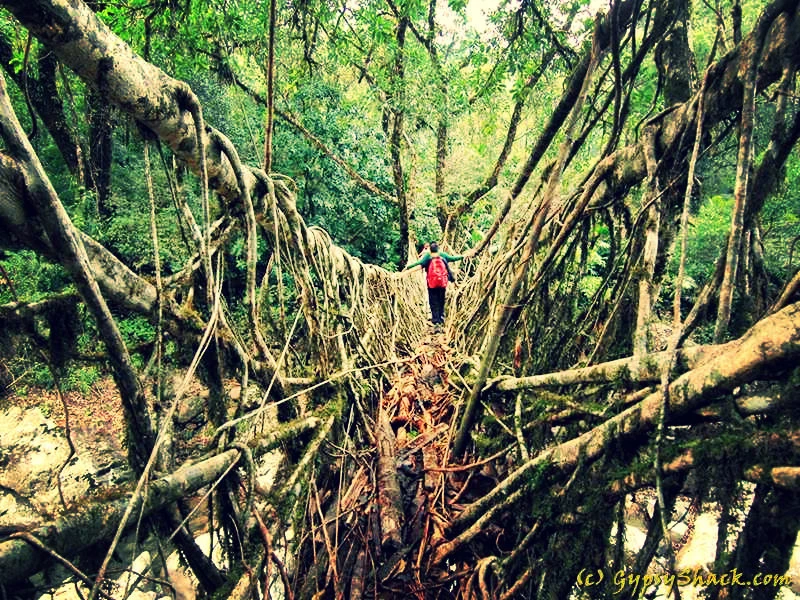

इतिहास
यह मेघालय की मूर्तिकला है|
राज्य कला और हस्तशिल्प की एक समृद्ध परंपरा से मेघालय संपन्न है।
मेघालय के लोगों ने लंबे समय तक बुनाई की कला को सिद्ध किया है,
चाहे वह गन्ना हो या कपड़ा। राज्य के बाजारों को ऐसे अद्भुत हस्तशिल्प के लिए तैयार किया जा सकता है।
यहां सबसे प्रमुख कला वुडकार्विंग और बेंत और बांस का काम है क्योंकि राज्य प्रचुर मात्रा में लकड़ी का उत्पादन करता है।
कारीगरों ने अद्भुत बेंत की चटाई, बुनाई वाले पंखे, टोपी, मूर्ति, और टोकरियाँ बुनाई।
ख़ासों द्वारा बुनी गई विशेष प्रकार की बेंत की चटाई को 'टालेंग'के नाम से जाना जाता है जो अत्यधिक टिकाऊ होती है।
उन्हें घरेलू चाकू, बर्तन और यहां तक कि बंदूक बनाने के लिए भी जाना जाता है।
गारो ने अपनी पोशाक के लिए इस्तेमाल की जाने वाली सामग्री को 'डाकमंडा' कहा।
मेघालय दुनिया की सबसे सुंदर मूर्तिकला बनाता है।
ये मेघालय के प्राचीन जंगल हैं|

मोंटोन इकोरगियन पक्षियों के एक विविध मिश्रण का घर है,
जिसमें 2017 तक कुल 659 प्रजातियां दर्ज की गई हैं।
यहां रहने वाले कुछ पक्षी इंडो-बर्मा ईकोरोगियन के लिए स्थानिक हैं,
और काफी कुछ प्रजातियों को खतरा है या निकट पर खतरा है।
वैश्विक स्तर इनमें से, दो प्रकार के गिद्ध, ओरिएंटल व्हाइट-समर्थित वल्चर और स्लेंडर-बिल्ड वल्चर,
दोनों को विलुप्त होने के पास गंभीर रूप से लुप्तप्राय प्रजातियों के रूप में अतिरिक्त सुरक्षा की आवश्यकता होती है।
मेघालय के जंगल न केवल पक्षियों के लिए एक वन्यजीव आश्रय के रूप में महत्वपूर्ण हैं,
बल्कि उनकी लंबी दूरी की उड़ानों में प्रवासी पक्षियों के लिए भी महत्वपूर्ण है।
उपोष्णकटिबंधीय वन कई छिपकलियों और कछुओं के अलावा,
सरीसृपों की एक विविध रेंज प्रस्तुत करते हैं,
जिसमें 56 प्रजाति के सांप शामिल हैं।
टोके गेको, दुनिया के सबसे बड़े भू-खंडों में से हैं,
यहां तीन अलग-अलग प्रकार के मॉनिटर छिपकली हैं,
इन सभी को 1972 के बाद से संरक्षित किया जाना था,
और जंगलों में स्किंक की एक नई प्रजाति (स्पेनोमोर्फस एपाल्टब्रेटस) को देर से खोजा गया था।
ये मेघालय के
प्राचीन शिल्प हैं|

मेघालय राज्य बांस के उत्पादों के साथ-साथ खासी कलाकृतियों के लिए प्रसिद्ध है।
मेघालय हस्तशिल्प खरीदने के लिए सबसे अच्छी जगह शिलांग है।
पूरे शहर में, आप बांस के हस्तशिल्प और फर्नीचर, लकड़ी की नक्काशी, खोक या ठगी की टोकरी,
कालीन, तिब्बती और ऊनी शॉल, वन शहद, बांस शूट अचार और अधिक के लिए बाजारों को
छानकर पहाड़ियों की संस्कृति में सोख सकते हैं।
खलीस ने एक विशेष प्रकार की टिकाऊ बेंत की चटाई बिछाई, जिसे टिलेंग कहा जाता है,
जो दुकानदारों के बीच काफी लोकप्रिय है। गारो ने दक्मांडा नामक एक कपड़ा बुना, जिसका उपयोग शर्ट,
बेड कवर, चादर आदि बनाने के लिए किया जाता है। वे मेघम खोक नामक टोकरी भी बनाते हैं।
उनकी पोकरवर्क एक विशेषता है, जहां वे बांस को लाल गर्म नुकीली छड़ से जलाते हैं।
मेघालय जयंतिया जनजाति को बांस से मछली पकड़ने के जाल बनाने के लिए जाना जाता है।
बेंत और बांस के उत्पाद, कपड़ा बुनाई, कालीन बुनाई, आभूषण बनाने और लकड़ियों से बने हस्तशिल्प भी मेघालय की कला और शिल्प में महत्वपूर्ण स्थान रखते हैं।
मेघालय की शिल्प संस्कृति का अभिन्न अंग इसकी बुनाई परंपरा है जिसे बांस, बेंत, कपास, ऊन और रेशम जैसे विभिन्न माध्यमों में खूबसूरती से दिखाया गया है।
मेघालय का इतिहास
मेघालय, पड़ोसी भारतीय राज्यों के साथ, पुरातात्विक हित में रहा है।834 में असम में कैमेलिया साइनेंसिस की ब्रिटिश खोज और बाद में 1839 से जमीन किराए पर देने वाली कंपनियां।
मेघालय का गठन असम राज्य के दो जिलों को मिलाकर किया गया था: यूनाइटेड खासी हिल्स और जयंतिया हिल्स, और गारो हिल्स 21 जनवरी 1972 को। पूर्ण राज्य का दर्जा पाने से पहले, मेघालय को 1970 में अर्ध-स्वायत्त दर्जा दिया गया था।हालांकि, जब 1912 में विभाजन को उलट दिया गया, तो मेघालय असम प्रांत का हिस्सा बन गया। 3 जनवरी 1921 को भारत सरकार अधिनियम 1919 की धारा 52 ए के अनुसरण में, गवर्नर-जनरल-इन-काउंसिल ने खासी राज्यों के अलावा, मेघालय में अब क्षेत्रों को "पिछड़ा हुआ मार्ग" घोषित किया। इसके बाद, ब्रिटिश प्रशासन ने भारत सरकार अधिनियम 1935 लागू किया, जिसने पिछड़े इलाकों को दो श्रेणियों में विभाजित किया: "बहिष्कृत" और "आंशिक रूप से बहिष्कृत" क्षेत्र।
1947 में भारतीय स्वतंत्रता के समय, वर्तमान मेघालय ने असम के दो जिलों का गठन किया और असम राज्य के भीतर सीमित स्वायत्तता का आनंद लिया। 1960 में एक अलग हिल राज्य के लिए आंदोलन शुरू हुआ। 1969 के असम पुनर्गठन (मेघालय) अधिनियम ने मेघालय राज्य को एक स्वायत्त दर्जा दिया। अधिनियम 2 अप्रैल 1970 को लागू हुआ और मेघालय का एक स्वायत्त राज्य असम से बाहर पैदा हुआ। स्वायत्त राज्य में भारतीय संविधान की छठी अनुसूची के अनुसार 37 सदस्यीय विधायिका थी।
1971 में, संसद ने पूर्वोत्तर क्षेत्र (पुनर्गठन) अधिनियम, 1971 पारित किया, जिसने मेघालय के स्वायत्त राज्य पर पूर्ण राज्य का दर्जा दिया। मेघालय ने 21 जनवरी 1972 को अपनी खुद की एक विधान सभा के साथ राज्य का दर्जा प्राप्त किया।पड़ोसी अहोम और कचहरियों के इतिहास में अधिक महत्वपूर्ण खासी राज्यों के अलावा, ब्रिटिश काल से पहले मेघालय के बारे में बहुत कम जानकारी है। 19 वीं शताब्दी की शुरुआत में, हालांकि, बंगाल और असम को जोड़ने के लिए क्षेत्र के माध्यम से एक सड़क बनाने की ब्रिटिश इच्छा ने नोखलाव की खासी रियासत के शासक (सियेम) के साथ एक संधि (1827) का नेतृत्व किया। संधि के विरोधियों ने 1829 में इसे फिर से शुरू करने के लिए सिमी को राजी कर लिया, और बाद में अंग्रेजों के हमले ने खासी के खिलाफ ब्रिटिश सैन्य अभियानों के लिए अनिवार्य रूप से नेतृत्व किया। 1830 के दशक के मध्य तक, अधिकांश स्थानीय शासकों ने अंग्रेजों को सौंप दिया था। अगली शताब्दी के लिए, अंग्रेजों ने इस क्षेत्र पर राजनीतिक नियंत्रण स्थापित किया, जिसे गैरो और कोसिया (खासी) राज्यों के रूप में जाना जाता था, लेकिन जनजातियों ने खुद को छोड़ दिया, वे अपने पारंपरिक तरीके को एकांत में संरक्षित करने में सक्षम थे।
1947 में इस क्षेत्र के शासकों ने भारत के नए स्वतंत्र देश में प्रवेश किया। भारत के पहले प्रधान मंत्री, जवाहरलाल नेहरू ने जनजातीय लोगों के जीवन के तरीके को संरक्षित और संरक्षित करने के लिए एक नीति बनाई। अन्य जनजातीय क्षेत्रों के साथ, इस क्षेत्र को भारतीय संविधान में विशेष संरक्षण दिया गया था, और हालांकि, असम राज्य के भीतर इसे स्वायत्तता का एक बड़ा हिस्सा बरकरार रखा गया था।
19 वीं शताब्दी में ब्रिटिश प्रशासन के अधीन आने तक खासी, गारो और जयंतिया जनजातियों के अपने राज्य थे। बाद में, अंग्रेजों ने 1835 में मेघालय को असम में शामिल कर लिया। इस क्षेत्र ने ब्रिटिश क्राउन के साथ संधि के आधार पर अर्ध-स्वतंत्र स्थिति का आनंद लिया।
जब 1960 में असमिया राज्य की आधिकारिक भाषा बन गई, तो स्वायत्तता और स्वशासन के लिए आंदोलन ने ताकत इकट्ठा की। पूर्वोत्तर भारत के कई अन्य पहाड़ी क्षेत्रों के विपरीत, यह आंदोलन काफी हद तक शांतिपूर्ण और संवैधानिक था। मेघालय 1970 में असम के भीतर एक स्वायत्त राज्य के रूप में बनाया गया था और 21 जनवरी 1972 को पूर्ण राज्य का दर्जा हासिल किया है।